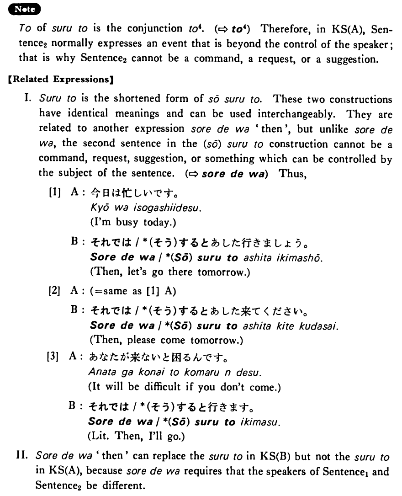

すると (B. 437)
- (ksa).
- ジョギングを始めました。するとご飯が美味しくなりました。
- I began jogging. Then, I began to have a good appetite.
- (ksb).
- A:今日は月曜日ですよ。 B:するとあのデパートは休みですね。
- A: Today is Monday, you know. B: Then, that department store is closed, isn't it?
- (a).
- 私は自転車を買いました。すると弟も欲しがりました。
- I bought a bike. Then, my younger brother wanted one, too.
- (b).
- 頭が痛かったのでアスピリンを飲みました。すると痛みがすぐ止まりました。
- I took an aspirin because I had a headache. Then, the headache disappeared right away.
- (c).
- A:息子は今高校三年です。 B:すると、来年は大学受験ですね。
- A: My son is now a junior at high school. B: Then, he is going to take a college entrance examination next year, isn't he?
